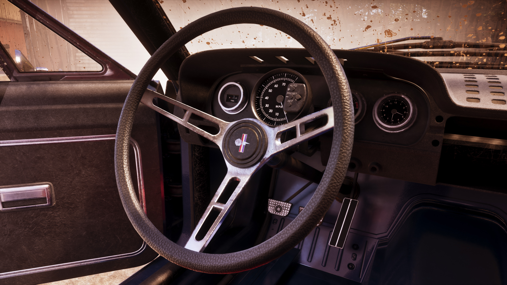
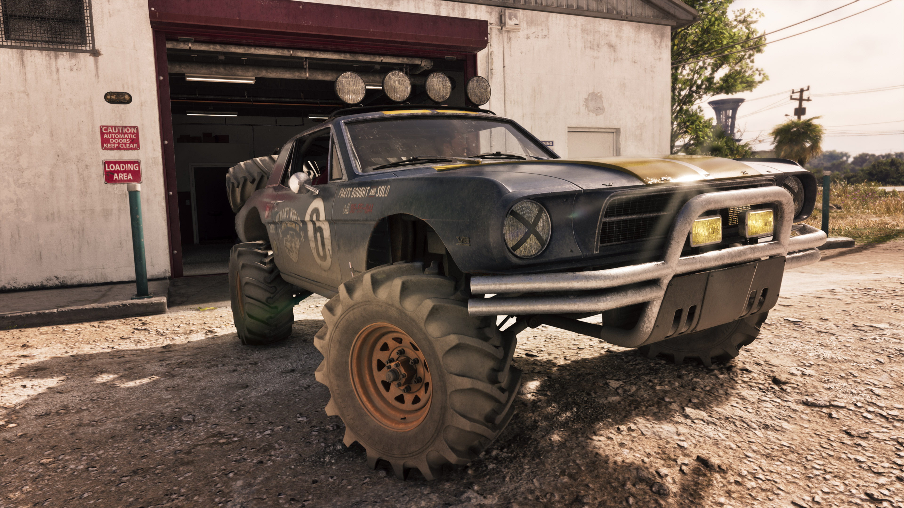

’67 Vapid Dominator Buggy
O ’67 Vapid Dominator Buggy é um veículo oficialmente apresentado pela Rockstar Games como parte do Grand Theft Auto VI Ultimate Edition Upgrade. O benefício anunciado inclui também uma garagem, enquanto quatro screenshots oficiais já mostram diferentes ângulos do veículo.

O que sabemos até agora
A Rockstar identifica oficialmente o veículo como ’67 Vapid Dominator Buggy.
Ele aparece na lista de conteúdos do GTA VI Ultimate Edition Upgrade acompanhado explicitamente de uma garagem.
Além disso, quatro imagens próprias foram publicadas na biblioteca oficial de GTA VI sob os nomes Vapid Dominator Buggy 01, 02, 03 e 04.

Ainda não confirmado: a Rockstar não detalhou velocidade, aceleração, preço, localização, capacidade de passageiros, opções de personalização, funcionamento da garagem ou método exato pelo qual o benefício será disponibilizado dentro da história.

Quatro imagens dedicadas ao veículo
O Dominator Buggy está entre os veículos que receberam uma sequência própria de quatro screenshots oficiais.
Esses materiais permitem documentar sua aparência antes do lançamento sem depender de identificações ou reconstruções feitas pela comunidade.
O GTA6Zoone continuará separando aquilo que pode ser observado nas imagens daquilo que realmente for confirmado como característica jogável.
Dominator Buggy e garagem
Diferentemente de alguns outros veículos do Ultimate Edition Upgrade, a própria lista oficial associa o ’67 Vapid Dominator Buggy a uma garagem.
A existência da garagem é confirmada. Sua localização, aparência, capacidade e funcionalidades ainda não foram detalhadas suficientemente pela Rockstar.
Galeria oficial do Dominator Buggy
Quatro screenshots oficiais publicados especificamente para o ’67 Vapid Dominator Buggy.

O que vamos testar no Dominator Buggy
Como o GTA6Zoone organiza o veículo na categoria off-road, a futura gameplay poderá testar principalmente seu comportamento em diferentes condições de terreno.
Asfalto
Velocidade e estabilidade em estrada.
Terra
Comportamento fora das vias pavimentadas.
Obstáculos
Resposta do veículo em terrenos irregulares.
Danos
Alterações visuais após impactos.
Nota: “off-road” é a categoria editorial utilizada pelo GTA6Zoone para organizar o catálogo. Ela não é apresentada aqui como uma classe técnica oficial divulgada pela Rockstar.
Aparências do Dominator Buggy
Depois do lançamento, esta área poderá receber screenshots próprios mostrando as cores e configurações realmente disponíveis para o veículo.
As quatro imagens oficiais não são tratadas automaticamente como confirmação de opções selecionáveis pelo jogador.
O Dominator Buggy poderá ser modificado?
A Rockstar ainda não detalhou quais opções de modificação estarão disponíveis especificamente para este veículo.
Visual
Pinturas, peças externas e acabamentos serão catalogados somente após confirmação.
Rodas e pneus
Possíveis alterações serão verificadas diretamente dentro do jogo.
Desempenho
Melhorias de motor, aceleração ou outras características ainda não foram confirmadas.
Gameplay do ’67 Vapid Dominator Buggy
Depois do lançamento de GTA VI, esta área receberá uma gameplay própria dedicada ao Dominator Buggy.
O vídeo poderá mostrar condução no asfalto e na terra, interior, som, estabilidade, danos, desempenho e todas as opções de personalização realmente disponíveis.
Informações que ainda serão verificadas
Estes campos só receberão valores quando houver informação oficial ou quando puderem ser testados diretamente em GTA VI.
Obtenção
Como o benefício será recebido no jogo.
Garagem
Localização e funcionamento.
Velocidade
Desempenho verificado em teste.
Aceleração
Comparação com outros veículos.
Ocupantes
Capacidade real do veículo.
Personalização
Peças e opções realmente disponíveis.
Danos
Comportamento visual após colisões.
Comparativos
Testes com outros veículos off-road.
O que podemos afirmar hoje
Essa é a denominação utilizada oficialmente pela Rockstar Games.
O veículo está explicitamente listado entre os conteúdos do Upgrade.
A própria Rockstar lista o conteúdo como ’67 Vapid Dominator Buggy and Garage.
A biblioteca possui imagens numeradas de 01 até 04.
Rockstar Games
Esta ficha utiliza somente informações oficialmente publicadas pela Rockstar Games sobre o ’67 Vapid Dominator Buggy e as edições de GTA VI.